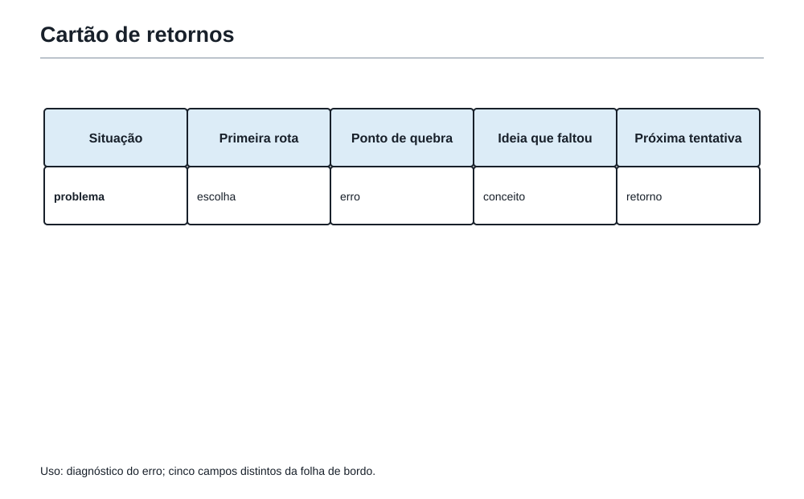

Entre um simulado e outro
1. O espaço entre duas provas
Depois do simulado, Felipe tinha uma folha de bordo com pistas, respostas, dúvidas e alguns travamentos bem nomeados. Em alguns problemas, ele sabia exatamente o que faria diferente. Em outros, só sabia que precisava voltar.
— Então agora eu tenho de estudar tudo de novo? — perguntou.
O Professor olhou para a Mochila aberta sobre a mesa.
— Não. Agora você tem de escolher o que merece voltar para a Mochila primeiro.
O espaço entre um simulado e outro não é uma sala de espera. É o lugar em que uma tentativa se transforma em habilidade. Mas isso não acontece por acumular listas, horários rígidos ou promessas enormes. Acontece quando o estudante responde a quatro perguntas honestas:
- O que minha tentativa revelou?
- Qual causa está mais atrapalhando minha próxima prova?
- Que treino pequeno conversa diretamente com essa causa?
- Como vou perceber que a ideia ficou mais disponível?
No capítulo anterior, o diagnóstico terminava em um plano curto de sete dias. Agora esse plano ganha continuidade. Ele vira um ciclo: uma sequência com começo, observação, ajuste e teste, que cabe na vida real.
Retomada da Ferramenta da Mochila 106 — Organizar o estudo em ciclos de simulado, correção, diagnóstico, treino e novo simulado
Um ciclo liga tentativa, correção, diagnóstico, treino e novo teste. Ele tem direção, mas pode ser ajustado quando a semana muda.
2. Evoluir não é estudar mais
É possível passar muito tempo diante da matemática e ainda repetir o mesmo obstáculo. Por exemplo:
- resolver muitas contas quando o problema era entender o pedido;
- reler uma solução quando faltava escolher uma primeira representação;
- fazer novos exercícios de área quando a dificuldade era explicar por que uma subtração funciona;
- insistir em uma questão longa quando um caso pequeno mostraria a regra.
Mais tempo não corrige automaticamente uma causa mal identificada.
Felipe comparou duas anotações depois de um simulado:
| Anotação | O que ela permite fazer? |
|---|---|
| “Preciso melhorar em matemática.” | Quase nada: o alvo é grande demais. |
| “Em caminhos com ponto proibido, contei todos os caminhos, mas esqueci de retirar os que passam pelo ponto.” | Criar um treino preciso: total, parte proibida e complemento. |
A segunda frase é mais útil porque transforma uma sensação em uma ação. Ela não diminui o estudante. Pelo contrário: dá a ele uma alavanca.
Um ciclo pode ter vários assuntos, porque a matemática é ampla. Mesmo assim, convém ter uma prioridade principal. Essa prioridade não precisa ser o erro mais feio; deve ser o erro que, se melhorado, abre mais portas.
Às vezes a prioridade é matemática: restos, frações, áreas, contagem. Às vezes é estratégica: ler o pedido final, deixar uma pista, escrever a justificativa. As duas espécies de treino são reais.
3. O ciclo da Academia
O ciclo da Academia tem cinco movimentos. Eles não são dias fixos nem uma escada que só pode ser subida uma vez. São funções diferentes do treino.
| Movimento | Pergunta que conduz | Produto do movimento |
|---|---|---|
| Tentativa | O que consigo fazer sozinho agora? | Uma rota, mesmo incompleta. |
| Correção | O que funcionou e onde a rota quebrou? | Uma explicação da causa. |
| Diagnóstico | O que é mais importante treinar primeiro? | Uma prioridade principal. |
| Treino-alvo | Que ideia preciso reconstruir e usar? | Evidências pequenas de domínio. |
| Novo teste | A ideia aparece sem que alguém a aponte? | Um retrato mais honesto da evolução. |
O novo teste não precisa esperar uma prova longa. Pode ser um problema curto, uma variação do problema antigo ou um mini-simulado de duas ou três questões. O importante é que ele não dê a primeira jogada de presente.
Assim, o ciclo não pergunta apenas “acertei?”. Ele pergunta também:
- reconheci a porta?
- escolhi uma representação útil?
- consegui reconstruir a ideia sem olhar a solução?
- escrevi de um modo conferível?
- percebi um caso proibido, uma unidade ou uma condição esquecida?
4. Poucos alvos, vistos de perto
Uma lista de dez fraquezas parece honesta, mas raramente ajuda. Ela transforma o treino em uma parede. Uma prioridade principal e, no máximo, uma prioridade de apoio deixam o próximo passo visível.
Veja três exemplos.
| Diagnóstico | Prioridade principal | Apoio possível | Evidência de avanço |
|---|---|---|---|
| “Chego a resultados, mas não justifico.” | Escrita em degraus. | Revisão dos cinco olhos. | Explico duas soluções sem salto decisivo. |
| “Não sei por onde entrar em problemas de ordem.” | Organizar condições em tabela ou bloco. | Testar casos possíveis. | Resolvo uma nova fila sem receber a pista do bloco. |
| “Uso a fórmula certa, mas troco área por perímetro.” | Ler grandeza e unidade antes da conta. | Desenho em malha. | Escolho a medida correta em três situações diferentes. |
Uma prioridade pode continuar no próximo ciclo quando ainda produz avanço. Ela pode mudar quando a evidência mostra que a ideia já está mais firme ou quando outra causa começou a limitar o trabalho.
Não há medalha por trocar de foco cedo demais, nem por insistir em algo já dominado. O objetivo é escolher o treino que mais melhora a próxima tentativa.
Em cada ciclo, escolha uma prioridade principal e defina uma evidência observável de avanço. “Estudar mais” não é evidência; “justificar três casos sem esquecer nenhum” é.
5. O caderno de erros é um caderno de retornos
O nome “caderno de erros” pode parecer pesado. Se ele virar uma lista de respostas vermelhas, será mesmo. A Academia prefere imaginar um caderno de retornos: um lugar para guardar os caminhos que merecem ser revisitados.
Cada registro deve ser curto o bastante para ser usado de novo. Não é necessário copiar o enunciado inteiro nem escrever uma confissão. Basta guardar o que permitirá reencontrar a ideia.
| Campo | Exemplo de registro |
|---|---|
| Situação | Caminhos mais curtos com ponto proibido. |
| Minha primeira rota | Contei os 10 caminhos totais. |
| Ponto de quebra | Não retirei os caminhos que passam por P. |
| Ideia que faltou | Contar até P, contar de P até B e subtrair. |
| Próxima tentativa | Fazer uma malha 2 por 3 com outro ponto proibido. |
Esse registro não diz “sou ruim em caminhos”. Ele diz o que fazer quando caminhos semelhantes aparecerem de novo.
Também vale registrar um acerto frágil: uma questão resolvida por tentativa que ainda não poderia ser explicada. Um acerto frágil é uma ideia que chegou ao resultado, mas ainda precisa de estrutura. Anotá-lo evita que ele se esconda atrás da nota.
Guarde a situação, a rota escolhida, o ponto de quebra, a ideia que faltou e uma próxima tentativa. O registro deve chamar você de volta à matemática, não ao julgamento.
Um retorno útil não guarda só a resposta: nomeia a categoria, localiza a causa, escolhe uma ferramenta e deixa uma próxima tentativa verificável.

6. Repetir não é refazer
Depois de corrigir uma questão, há uma armadilha confortável: olhar a solução, concordar com ela e resolver a mesma questão imediatamente. Isso pode dar uma sensação boa, mas ainda não mostra que a ideia ficou disponível.
Felipe chamou essa armadilha de “seguir as pegadas frescas”. Ele consegue voltar pelo mesmo caminho porque acabou de vê-lo, mas talvez não encontre a trilha amanhã.
A repetição inteligente tem três voltas.
Reler uma solução ainda visível não prova que a ideia ficou disponível. Refazer exige reconstruir a decisão e usá-la sem a resposta ao lado.
Primeira volta: entender
Leia a solução procurando a decisão principal. Não pergunte apenas “que contas foram feitas?”. Pergunte:
- qual era o pedido?
- qual ferramenta abriu a porta?
- por que essa ferramenta basta?
- onde eu teria tomado uma decisão diferente?
Segunda volta: reconstruir
Feche a solução e tente contar a ideia com suas próprias palavras. Você não precisa repetir frases. Precisa conseguir reconstruir a ponte entre os dados e a resposta.
Se a solução usa uma tabela, refaça a tabela. Se usa um bloco de pessoas, monte o bloco. Se usa uma subtração de áreas, desenhe a figura grande e a parte retirada.
Terceira volta: transferir
Agora mude alguma coisa importante: os números, o ponto proibido, a posição das pessoas, a figura, a pergunta final. A ideia deve sobreviver à mudança de roupa do problema.
Por exemplo, depois de aprender a contar caminhos que evitam P, tente um caminho que evita Q em uma malha de outro tamanho. A pergunta não é “lembro a resposta antiga?”. É “reconheço a mesma estrutura em um cenário novo?”.
Depois de entender uma solução, reconstrua-a sem olhar e use a mesma ideia em uma variação. Só então você sabe se aprendeu uma rota, e não apenas uma resposta.
7. Revisão em camadas
Uma revisão forte não precisa reler tudo desde o começo. Ela sobe por camadas, conforme a ideia pede mais força.
| Camada | Pergunta central | Exemplo em MMC |
|---|---|---|
| Ideia essencial | O que este conceito responde? | Quando ritmos voltam a coincidir. |
| Problema típico | Consigo usar a ideia em uma situação clara? | Duas luzes piscam a cada 4 e 6 minutos. |
| Problema misto | Reconheço a ideia quando ela não vem anunciada? | Três eventos com horários, condição extra e pergunta sobre o próximo encontro. |
As camadas evitam dois extremos: revisar apenas definições, sem saber usar; ou saltar para um problema gigante, sem ainda ter a ideia essencial firme.
O mesmo vale para escrita. Primeiro, escreva uma solução típica usando alvo, ferramenta, caminho e fecho. Depois, escreva uma solução em que seja preciso escolher entre duas ferramentas parecidas. Por fim, reveja se um leitor entende por que a escolha foi feita.
Suba de uma ideia que você consegue explicar para um uso típico e, só então, para um problema em que a ferramenta não vem anunciada.
Conteúdo novo pode entrar no ciclo, mas devagar. Se a prioridade principal ainda precisa de atenção, um novo assunto não deve ocupar todas as portas da semana. Curiosidade é bem-vinda; avalanche, não.
8. Mini-simulados: o teste de realidade
O treino-alvo pode ser muito guiado: “hoje vou praticar subtrair os caminhos proibidos”. O mini-simulado faz a pergunta complementar: “quando ninguém nomeia essa ferramenta, eu a reconheço?”.
Um mini-simulado útil pode ter duas, três ou quatro questões. Ele deve misturar pelo menos uma questão ligada à prioridade e outra que peça uma ferramenta já firme. Assim, o estudante não entra sabendo qual porta será cobrada.
Depois, a correção volta a ser diagnóstica:
- uma resposta certa foi escrita de modo suficiente?
- a prioridade apareceu sem dica?
- um erro novo nasceu de leitura, escolha, desenvolvimento, escrita, revisão ou cálculo?
- o próximo ciclo deve manter a prioridade, ajustá-la ou trocá-la?
Uma nota pode ser anotada, mas ela não é o relatório inteiro. Dois acertos podem esconder rotas bem diferentes: um foi resolvido com segurança; outro chegou ao resultado por sorte e não sobreviveria a uma variação.
Observe portas reconhecidas, justificativas mais claras, retornos mais curtos e transferências bem-feitas. A nota é um dado; não é o diagnóstico inteiro.
9. Um ciclo possível que cabe na vida real
Nenhuma semana tem o mesmo tamanho por dentro. Há dias de escola, cansaço, compromissos, vontade de resolver uma questão difícil e dias em que uma boa leitura já é o trabalho possível.
Por isso, o ciclo abaixo não é um calendário a obedecer. É um exemplo de distribuição de funções ao longo de cerca de duas semanas. Os blocos podem mudar de lugar; o sentido deles deve permanecer.
| Momento do ciclo | Trabalho principal | Sinal de que basta por hoje |
|---|---|---|
| Início | Ler o simulado e escolher uma prioridade. | Sei dizer a causa em uma frase precisa. |
| Retorno 1 | Entender e reconstruir uma questão importante. | Consigo explicar a decisão central sem olhar. |
| Retorno 2 | Resolver uma variação do mesmo tipo. | A ferramenta aparece sem ser anunciada. |
| Camada de revisão | Relembrar ideia essencial e problema típico. | Consigo distinguir a ideia de uma parecida. |
| Escrita | Reescrever uma solução em degraus. | Um leitor pode conferir o salto principal. |
| Mini-simulado | Misturar duas ou três questões. | Tenho nova evidência, não apenas sensação. |
| Ajuste | Atualizar o cartão de retorno. | Sei manter, reduzir ou trocar o alvo. |
Se um dia planejado não acontece, o ciclo não fracassou. Ele apenas continua no próximo espaço possível. O que não funciona é fingir que o dia perdido não existiu e empilhar duas semanas em uma noite.
Constância não é nunca falhar. É saber retomar sem transformar uma pausa em desistência.
Um ciclo saudável distribui funções: uma ideia é retomada, uma rota é praticada, uma solução é escrita e um teste novo mostra o que realmente apareceu.
Quando um dia muda, retome pelo próximo ponto útil. O plano deve orientar a vida real, não puni-la.
10. Quatro testes de rota
Os problemas a seguir são originais, em estilo OBMEP. Eles conversam com ideias de organização de treino, mas não revelam antes qual ferramenta escolher. Tente primeiro. Depois use-os para praticar o cartão de retorno: pedido, rota, ponto de quebra, ideia e próxima tentativa.
Problema 1 — Os encontros do calendário
Em um ciclo de treino, Felipe revisa uma ideia a cada 3 dias e faz um mini-simulado a cada 5 dias. Hoje ele fez as duas coisas. Depois de quantos dias as duas atividades voltarão a ocorrer no mesmo dia pela primeira vez?
Problema 2 — As páginas de retorno
Um caderno tem páginas com espaço para 6 cartões de retorno cada. Depois de um simulado, Felipe registrou 42 cartões. Ele separou 14 deles como “acertos frágeis” e os demais como “erros que pedem nova tentativa”. Quantas páginas serão necessárias para os cartões que pedem nova tentativa?
Problema 3 — O tempo do ciclo
Em uma sessão de 90 minutos, Felipe reservou
2/5do tempo para revisão de ideias essenciais e1/3para problemas-alvo. O tempo restante foi usado para escrever soluções. Quantos minutos foram usados para a escrita?
Problema 4 — As sequências de marcas
Em um mini-simulado, cada uma de 5 questões recebe uma marca entre quatro possibilidades: verde, amarela, vermelha ou azul. Duas questões consecutivas não podem receber a mesma marca. Quantas sequências de marcas são possíveis?
11. Correção comentada — O que cada teste mede
Problema 1 — Os encontros do calendário
As duas atividades começaram juntas. Procuramos o primeiro instante em que um múltiplo de 3 e um múltiplo de 5 coincidem.
O MMC de 3 e 5 é 15.
Resposta: as duas atividades voltarão a coincidir depois de 15 dias.
Rota para registrar: se você listou os múltiplos, a ideia estava correta. Se respondeu 8, talvez tenha somado os ritmos em vez de procurar um reencontro.
Problema 2 — As páginas de retorno
Dos 42 cartões, 14 são acertos frágeis. Portanto, os que pedem nova tentativa são:
42 - 14 = 28.
Cada página recebe 6 cartões. Quatro páginas recebem 24 cartões, mas ainda restam 4. É necessária mais uma página.
Resposta: serão ocupadas 5 páginas.
Rota para registrar: a divisão 28 ÷ 6 produz 4 páginas completas e resto 4. A pergunta fala de páginas ocupadas, portanto a página incompleta também conta.
Problema 3 — O tempo do ciclo
Primeiro somamos as partes reservadas à revisão e aos problemas-alvo:
2/5 + 1/3 = 6/15 + 5/15 = 11/15.
Sobra:
1 - 11/15 = 4/15 do tempo.
Como a sessão dura 90 minutos:
90 × 4/15 = 24.
Resposta: foram usados 24 minutos para a escrita.
Rota para registrar: antes de usar os 90 minutos, é necessário descobrir qual fração sobrou. A fração do tempo e o número de minutos são etapas diferentes.
Problema 4 — As sequências de marcas
Para a primeira questão, existem 4 escolhas possíveis. Para cada questão seguinte, existem 3 escolhas, pois a marca anterior não pode se repetir.
Assim, o número de sequências é:
4 × 3 × 3 × 3 × 3 = 4 × 3^4 = 324.
Resposta: existem 324 sequências possíveis.
Rota para registrar: se você fez 4^5, contou também as sequências que repetem a mesma marca em questões consecutivas. A condição muda o número de escolhas depois da primeira posição.
Oficina12. Oficina Olímpica 13 — Um treino que se reconhece
Os desafios desta oficina são originais, em estilo OBMEP. Escolha uma ordem. Para ao menos dois deles, deixe uma marca curta de rota antes de comparar qualquer solução. Ao terminar, escolha apenas um alvo principal para o próximo ciclo.
Os Desafios 1 e 2 são problemas originais em estilo OBMEP de resposta determinada. Os Desafios 3, 4 e 5 são atividades abertas de construção, comparação argumentada ou planejamento: as pistas indicam critérios, não uma única resposta.
Desafio 1 — A roda de revisão
Uma ideia é revisada a cada 4 dias, uma segunda a cada 6 dias e uma terceira a cada 9 dias. Hoje as três foram revisadas. Depois de quantos dias as três voltarão a ser revisadas no mesmo dia?
Desafio 2 — O cartão incompleto
Um cartão de retorno diz: “Em uma malha, contei todos os caminhos mais curtos, mas minha resposta ficou grande demais porque havia um ponto que não podia ser usado.” Qual é a ideia mais provável que falta ao cartão? Escreva-a como uma instrução matemática, não apenas como o nome de um assunto.
Desafio 3 — A nova versão
Um retângulo de 12 cm por 8 cm tem um quadrado de 4 cm de lado retirado de um canto. Crie uma variação desse problema que exija a mesma ideia, mas não use os números 12, 8 ou 4. Depois resolva a sua própria variação.
Desafio 4 — As três tentativas
Em um mini-simulado, três estudantes acertaram uma questão. Ana usou uma tabela e justificou todos os casos. Bruno testou valores até encontrar a resposta, mas não explicou por que não havia outras. Caio copiou uma conta correta, mas não sabe dizer o que ela representa. Coloque as três tentativas em ordem de maior para menor evidência de aprendizagem e justifique.
Desafio 5 — O próximo alvo
Leia os registros abaixo e escolha uma única prioridade principal para o próximo ciclo de Felipe.
- Em dois problemas, ele encontrou a conta certa, mas respondeu uma grandeza diferente da pedida.
- Em um problema de lógica, ele fez uma tabela útil e esqueceu de analisar o último caso.
- Em uma questão de MMC, ele reconheceu o reencontro sozinho e explicou bem.
Escreva: prioridade, dois treinos pequenos e uma evidência que mostraria avanço.
Pistas de correção
- O primeiro desafio pede MMC de 4, 6 e 9:
36dias. - A ideia do segundo desafio é separar os caminhos em total e proibidos, contando os que passam pelo ponto e subtraindo-os do total.
- A variação do terceiro desafio pode mudar medidas e posição do recorte, mas precisa conservar a lógica “área total menos área retirada”.
- A ordem do quarto desafio é Ana, Bruno, Caio. Bruno tem uma descoberta, mas falta justificar a completude; Caio ainda não apropriou a ideia.
- No quinto desafio, uma prioridade forte é ler o pedido e conferir a grandeza/unidade antes do fecho. A resposta deve apresentar treinos concretos e uma evidência verificável.
13. A Mochila depois do ciclo
Entre um simulado e outro, a Mochila não fica mais pesada porque ganhou muitos papéis. Ela fica mais fácil de abrir porque algumas ferramentas passaram por três provas: foram entendidas, reconstruídas e transferidas.
As ferramentas organizadas neste capítulo são:
| Ferramenta | Movimento que ela protege |
|---|---|
| 107 | Escolher poucos alvos principais por ciclo. |
| 108 | Equilibrar revisão, problemas-alvo, escrita e mini-simulados. |
| 109 | Usar o caderno de erros como ferramenta de crescimento, não como castigo. |
| 110 | Registrar erro com categoria, causa, ferramenta adequada e próximo treino. |
| 111 | Distinguir repetir de refazer. |
| 112 | Fazer repetição inteligente: entender, reconstruir e transferir. |
| 113 | Revisar em camadas: ideia essencial, problema típico e problema misto. |
| 114 | Medir evolução por sinais concretos, não apenas pela nota. |
| 115 | Manter constância com um plano possível e ajustável. |
O próximo simulado não será uma sentença sobre o ciclo. Ele será a próxima fotografia da rota. Algumas coisas estarão mais firmes; outras pedirão novo retorno. Isso é exatamente o que um treino vivo deve revelar.
Pergunta para amanhã
Quando chegar outra prova inteira, como transformar o que foi treinado em decisões claras, mesmo quando uma questão tenta assustar?